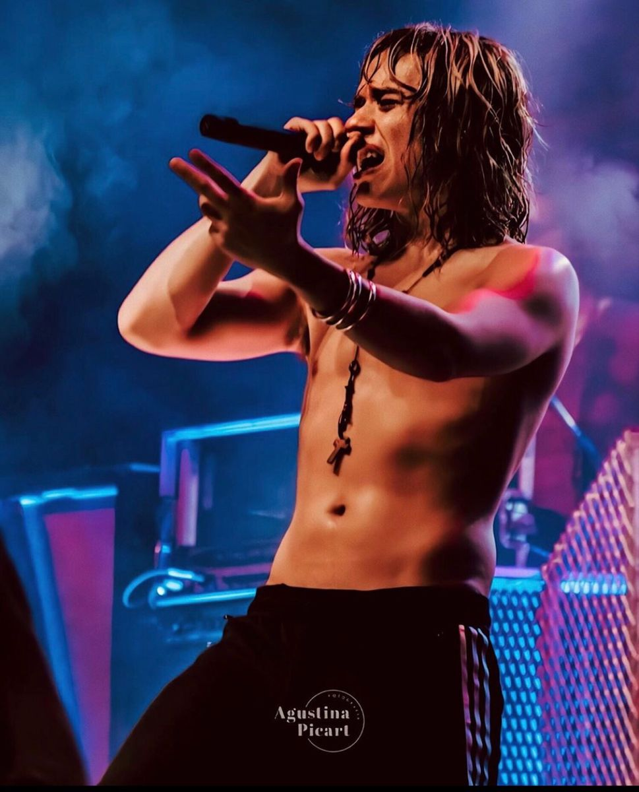

Guido Armido Sardelli (Don Torcuato, Buenos Aires; 5 de diciembre de 1988) es un músico argentino, conocido por ser el baterista, guitarrista y vocalista de la banda de rock argentina Airbag. Infancia Guido fue criado junto a sus hermanos, Patricio Sardelli y Gastón Sardelli por su madre, Alicia Beatriz y su padre Gastón Sardelli en la ciudad de Don Torcuato, Buenos Aires, Argentina. Su hermano Gastón tenía una banda con sus amigos, ensayaban en la cochera de su casa. Cuando la banda de Gastón terminaba de ensayar los tres hermanos se acercaban a probar los instrumentos que no sólo tocaban en la cochera sino que estos tocaban en su cuarto hasta que sus padres les pidiesen que parasen. Así se fueron dando cuenta de que tocar juntos era lo que les gustaba. Empezaron tocando canciones de bandas de rock and roll. Con Gastón en el bajo, Patricio (su otro hermano quien ya de muy pequeño era cantante de Tango e incluso llegó a salir de giras con tan corta edad. La influencia del Tango además de ser importante fue inculcada en los chicos por su abuela, ésta iba a impulsarlos a los 3 en su vida artística) en la guitarra y Guido en la batería. Así se forma la banda "Los Nietos de Chuck", como se hacían llamar en un principio (ese nombre fue adoptado en honor al famoso guitarrista y cantautor Chuck Berry, uno de tantos artistas que Guido como sus hermanos solían y suelen escuchar) antes de pasar a presentarse como Airbag. Tocaron en bares, pubs, festivales y otros espacios públicos. Los chicos fueron sonando cada vez mejor e incluso su público comenzaba a incrementarse, así como también se incrementaba su fama y éxito. Fama y éxito que les iba a cambiar la vida y que hasta el día de hoy los convertiría en una de las bandas de rock más conocidas de Argentina. Airbag Desde sus comienzos esta banda logró alcanzar la popularidad con bastante rapidez, sobre todo en jóvenes argentinas. Ya con varios temas compuestos y con influencias musicales de muchos géneros pasando por el rock and roll, Tango o música clásica, los chicos deciden grabar un demo. El demo llegó a las manos de la compañía Warner Music, y se les dio la oportunidad de grabar su primer disco. Los hermanos decidieron cambiar el nombre de la banda por Airbag. Pero no todo fue "color de rosa" para esta banda pues durante sus comienzos y explosión a la fama los chicos fueron estafados por su Mánager. Esto les costaría un gran monto de dinero para pagar abogados en el juicio. Si bien pasaron por momentos difíciles jamás pararon de componer y grabar canciones que con el tiempo se convirtieron en éxitos y lograron alcanzar primeros puestos en las radios argentinas. Una de las más populares en sus inicios fue "La partida de la Gitana". Más adelante "Cae el sol", "Noches de Insomnio", "Por mil Noches", hasta llegar a "Vivamos el Momento" ,"Como un Diamante" y "Über Puber" (corte de su último álbum "al parecer todo ha sido una trampa") Las influencias de la banda de Rock Airbag siempre fueron muy variadas: pasando por el Tango de Carlos Gardel, por el rock and roll de Chuk Berry y por bandas hard como Rata Blanca, Deep Purple, Aerosmith, Bon Jovi, Van Halen o Iron Maiden, Muse hasta llegar a Rammstein. En 2017 realizaron junto a una gran orquesta Sinfónica un concierto llamado "Sinfónico Ultra" en el estadio Luna Park donde además de versionar sus canciones a modo sinfónicas incluyeron a su repertorio grandes de la Música Clásica como Beethoven, Mozart y también Tangos de Astor Piazzola y Carlos Gardel. Hoy Guido compone canciones al igual que sus hermanos en Airbag (pero ya no toca la batería sino que toca la guitarra y canta) y entre los tres lograron encontrar una armonía e identidad, no sólo en lo musical sino también en los mensajes de sus letras (que suelen apuntar a conceptos como la Libertad, la Independencia y los Miedos que podemos tener los humanos relacionados con la existencia y el amor) que los identifica, distingue y los mantiene vigentes en la escena musical argentina y también en el resto de países de Latinoamérica (a los que suelen visitar seguido por la creciente demanda de su público, ej: Uruguay, Perú, Bolivia y sobre todo México).
